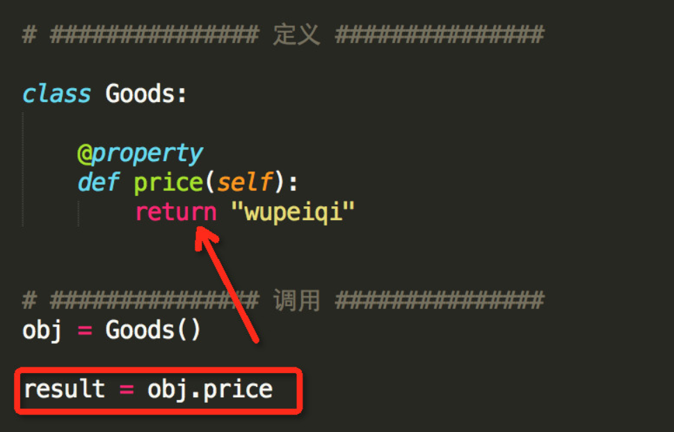

Contents
7.8. property装饰器，将方法转为属性,动态属性¶
#!/usr/bin/env python
# -*- coding:utf8 -*-
# auther; 18793
# Date：2019/6/13 17:54
# filename: property2.py
class Rectangle:
# 定义构造方法
def __init__(self, width, height):
self.width = width
self.height = height
# 定义setsize()函数
def setsize (self , size):
self.width, self.height = size
# 定义getsize()函数
def getsize (self):
return self.width, self.height
# 定义delsize()函数
def delsize (self):
self.width, self.height = 0, 0
# 使用property定义属性
size = property(getsize, setsize, delsize, '用于描述矩形大小的属性')
print(Rectangle.size.__doc__)
# print(help(Rectangle.size))
rect = Rectangle(3, 4)
print(rect.size)
rect.size = 7, 8
print(rect.height)
print(rect.width)
del rect.size
print(rect.width)
print(rect.height)
7.8.1. 访问方式和之前略有区别,用属性的方式访问¶
代码示例 1¶
#!/usr/bin/env python
#-*- coding:utf8 -*-
#通过装饰器方法来获取私有属性
class TVShow: #电视节目类
list_film = ["战狼2", "红海行动", "西游记女儿国", "熊出没变形记"]
def __init__(self, show):
self.__show = show ## 私有的实例属性
@property
def show(self):
'''
:return:私有属性
'''
return self.__show #返回类的实例
@show.setter #让属性可以进行修改
def show(self, value):
if value in TVShow.list_film: #判断值是否在列表中
self.__show = '您选择了《'+ value + "》,稍后将播放" #修改返回值
else:
self.__show = "您点播的电影不存在"
tvshow = TVShow("战狼2") #创建类的实例
print("正在播放:《", tvshow.show, "》") #获取属性值
print("您可以从", TVShow.list_film, "中选择台点播的电影")
tvshow.show = '红海行动'
print(tvshow.show) #获取属性值
7.8.2. @property 实现只读属性¶
@property 可以实现一个只读属性， 为属性添加了安全保护的机制。
注意：
@property 所装饰的方法变成属性之后，为只读的属性
不能通过 实例.xxx= 的方式进行修改。
用代码来理解 2¶
新式类中的属性有三种访问方式，
并分别对应了三个被@property、@方法名.setter、@方法名.deleter修饰的方法
#!/usr/bin/env python
#-*- coding:utf8 -*-
class Rect:
def __init__(self,weight,height):
self.__weight = weight
self.__height = height
@property #将方法转为属性
def area(self):
return self.__weight*self.__height
@area.setter #设置属性的值
def set_area(self, value):
if isinstance(value,int):
self.__weight += value
else:
raise ValueError
@area.deleter
def delete_are(self):
print("删除属性.......")
hu = Rect(10,20)
print(hu.area)
#不能进行重新赋值，会报错
hu.set_area = 100
print(hu.area)
del hu.delete_are
代码示例 3¶
#!/usr/bin/env python
#-*- coding:utf8 -*-
from datetime import datetime,date
class User:
def __init__(self,name,birthday):
self.name = name
self.birthday = birthday
self._age = 0
@property
def age(self):
return datetime.now().year - self.birthday.year
@age.setter
def age(self,value):
self._age = value
if __name__ == '__main__':
user = User("derek",date(year=1994,month=11,day=11))
user.age = 23
print(user._age) # 23,setter设置的
print(user.age) # 24 ,动态计算出来的
7.8.3. 使用property函数调用私有属性¶
使用方式如图所示： 
#!/usr/bin/env python
# coding=utf-8
__metaclass__ = type
class ProtectMe:
def __init__(self):
self.me = "qiwsir"
self.__name = "kivi"
@property
def name(self):
return self.__name
if __name__ == "__main__":
p = ProtectMe()
print p.name
定义时，在普通方法的基础上添加 @property 装饰器；
定义时，属性仅有一个self参数
调用时，无需无括号
7.8.4. 实现一个分页打印的类的代码¶
#!/usr/bin/env python
# -*- coding:utf8 -*-
# auther; 18793
# Date：2019/4/21 10:32
# filename: 分页的类.py
class Pagination(object):
"""
分页相关的代码
"""
def __init__(self, data_list, page, per_page=30):
"""
:param data_list: 数据的列表
:param page: 当前查看的页面
:param per_page: 每页默认要显示的行数
"""
self.data_list = data_list
self.page = page
self.per_page = per_page
@property
def start(self):
"""
计算索引的起始位置
:return:
"""
return (self.page - 1) * self.per_page
@property
def end(self):
"""
计算分页的结束位置
:return:
"""
return self.page * self.per_page
@property
def check_show(self):
res = None
if self.page * self.per_page > len(self.data_list):
print("--------已为您打开最后一页-------------")
last_index = int(len(self.data_list)/self.per_page)
self.page = last_index
res = self.data_list[self.start:self.end]
else:
res = self.data_list[self.start:self.end]
for index in res:
print(index)
if __name__ == '__main__':
# 模拟所有数据写入到一个list里面
data_list = []
for i in range(1, 901):
data_list.append("hujianli-blog-{}".format(i))
# 循环查看页面页数
while True:
page = int(input("请输入要查看的页数:"))
obj = Pagination(data_list, page)
obj.check_show
7.8.5. 属性(property)¶
##不推荐
class Clock(object):
def __init__(self):
self.__hour = 1
def setHour(self, hour):
if 25 > hour > 0: self.__hour = hour
else: raise BadHourException
def getHour(self):
return self.__hour
##推荐
class Clock(object):
def __init__(self):
self.__hour = 1
def __setHour(self, hour):
if 25 > hour > 0: self.__hour = hour
else: raise BadHourException
def __getHour(self):
return self.__hour
hour = property(__getHour, __setHour)